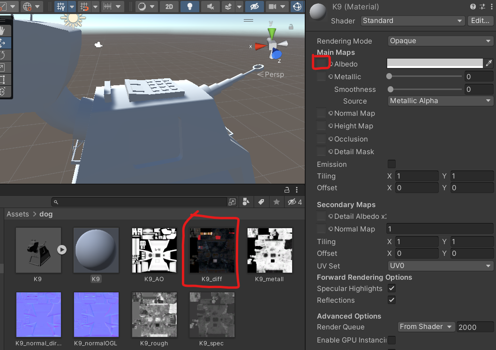

or
The Barrel uses Mayas PBR StingRay Textures because they are easy to apply in Maya and work well with Unity.
Other types of Maya textures will work in Unity, but may need re-applying using the second method shown in this worksheet.
For more information about texturing, look back at the previous Maya worksheets or ask.
By default 1 unit in Maya is 1 centimetre. This means that if you make a cube 1 unit high and import it into Unity it will be 1cm high.
However, it is important to check this so that you export it at the correct size.

The easiest way to see the actual size of your object is to use the universal Manipulator.

You can see that my barrel is only 4.8cm tall.
Scale up the barrel to a more appropriate height for a real barrel.
Make sure the base of the barrel stays on the ground.
In the next few steps we will be making some changes which may make it harder to edit later. We therefore want to save a new copy of our file so we can go back to the original if we need to.

The history keeps track of changes you make to your model but it can make your file bloated and unstable. Delete it by selecting your model and pressing the Delete history button.

When making your model you may have scaled some of the pieces. Before exporting the scales all need to be reset.

If we want to import our model into a different program the best format to choose is the universal FBX file type.
First make sure you have named and organised everything in your outliner. Our barrel is only one object, but if your object is made from multiple parts, group them together using ctrl + g and rename the group.

Choose a sensible location and file name.
Change the files of type: to FBX export
To make sure your textures are included, In the options panel on the right, under File Type Specific Options > Include tick Embed Media

You have now successfully exported your model from Maya.

If you look closely at the barrel you will see that its grey, no textures are applied to it,
However, because we embedded the materials within Maya we can now extract them.
First create a new folder in your assets panel named �Materials�
With the barrel selected, go to the Materials tab in the inspector.
You may get a pop up asking you to mark some textures as normal maps, they are.
You can now Drag your barrel into the scene and all the textures should be in place.
As we have also extracted the materials, we can edit these in Unity if we need to adjust them.
The above barrel should have imported fairly easily, but often the materials wont import properly and need to be re-applied. This can happen with models created with textures Unity does not recognise or if you download models with separate textures.
I have downloaded a model of a dog from Sketchfab (https://skfb.ly/MnrW)
If you don�t want to log in to sketchfab you can download it here:
If you unzip it you can see that the textures come through separately from the fbx file.
You will now have a grey material without any textures on it.
To apply the textures you need to drag and drop them onto the correct slots in the material.

AO stands for Ambient occlusion, this shows how exposed each part of the model is to ambient light. It should go into the Occlusion slot.
Quite often you will get 2 normal maps, directx and Open GL, Unity is usually setup for opengl, however, try both and choose the one you prefer, make sure you press the �fix� button so Unity knows its a normal map.
You may find that you cannot use all the maps.